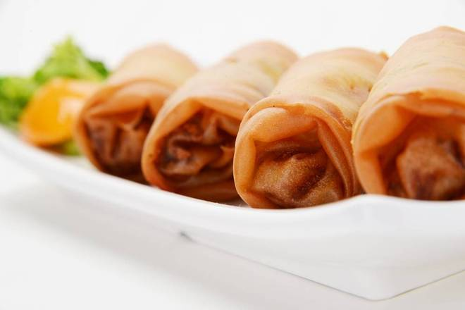

Sabores de China
Sabores de China
Rollitos Primavera

Ingredientes
- 12 hojas de pasta para rollitos (spring roll wrappers)
- 1 taza de repollo rallado
- 1 zanahoria rallada
- 1/2 taza de brotes de soya
- 2 cebollitas cambray picadas
- 1 cucharada de salsa de soya
- 1 cucharadita de aceite de ajonjolí
- Aceite vegetal para freír
- Sal y pimienta al gusto
Preparación
- En un sartén, calienta un poco de aceite y saltea el repollo, la zanahoria, los brotes y las cebollitas durante 3-4 minutos.
- Agrega la salsa de soya, el aceite de ajonjolí, sal y pimienta. Mezcla bien y deja enfriar.
- Coloca una hoja de pasta sobre una superficie limpia, pon una cucharada del relleno y enrolla, doblando las orillas.
- Sella los bordes con un poco de agua o harina disuelta.
- Fríe los rollitos en aceite caliente hasta que estén dorados y crujientes.
- Escurre en papel absorbente y sirve con salsa agridulce o de soya.
- Recomendaciones:
- Dejar enfriar completamente el relleno antes de envolver
- Sellar con clara de huevo o agua con harina.
← Volver a Recetas